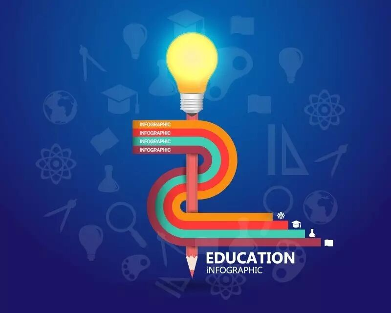

Time：19:30-21:30, Friday, June 30th
Venue: Room A218, New Main Building, Beihang University.

Table topic: Education
Toastmaster: Rocky
Table Topics Master: Amy
Nowadays, education has been a hot topic.as a student, we obtain an educationin our school; as an adult, we receive education in the society. through the education,we can know more about the world, have more experiences, broaden more horizons.In today's society, there are still many problems in Education which need us tojudge and solve.so come and have a talk with us about this topic! We arewaiting for you this Friday night!
Prepared speech
Speaker 1: John CC6
"simple clear and powerful"
Talking with others is always an important and difficult thing. Sometimes,we cannot express our ideas simply and clearly to be understand by others.Sometimes we lack a little confidence to express it powerfully so that otherswill cast doubt on it. Someone may feel confuse about this question! let’s seeJohn’s opinion about it!
Toastmasters International (TI) is a non-profit educational organization that operates clubs worldwide for the purpose of helping members improve their communication, public speaking, and leadership skills.You can find us by the following map of Beihang University.

https://mp.weixin.qq.com/s/53kFgNb2ZdyUG4V_xKCZrA
本页为抢救式本地归档，图文已永久保存。